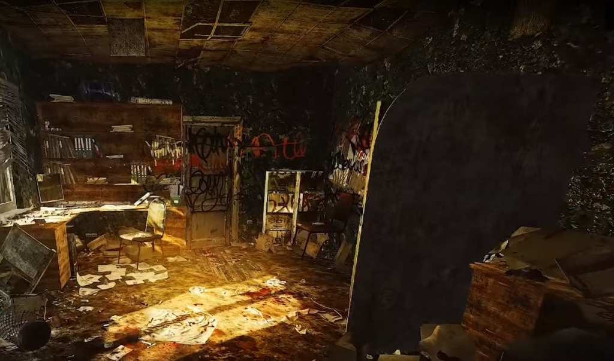
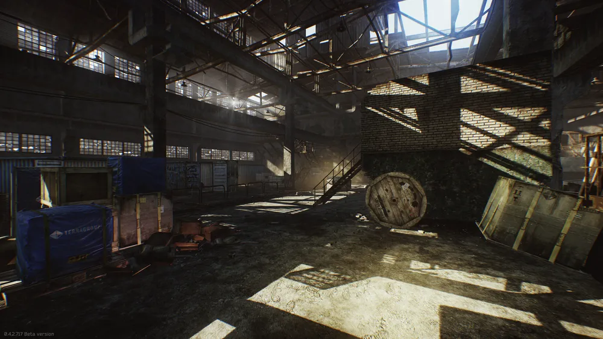

Mapa Factory

Mapka przedstawiająca główne obszary lokacji. Zaplanuj swoją trasę przed wejściem na mapę.
Strona poświęcona lokacji "Factory" w grze Escape from Tarkov.
Factory to jedna z najmniejszych, ale najbardziej intensywnych map w *Escape from Tarkov*. Zdominowana przez wąskie korytarze, ciasne przestrzenie i liczne punkty walki, jest idealnym miejscem na szybkie starcia PvP oraz zdobycie cennych zasobów. Przetrwanie na Factory wymaga szybkich reakcji i dobrej znajomości mapy.
Mapka przedstawiająca główne obszary lokacji. Zaplanuj swoją trasę przed wejściem na mapę.
Biuro zarządu to jeden z kluczowych punktów na Factory, w którym znajdują się cenne przedmioty, a także mogą pojawić się NPC lub inni gracze. Przestrzeń ta jest wąska i pełna niebezpieczeństw.
Magazyn to strefa, w której przechowywane są liczne zasoby. Jednak wąskie przejścia i duża aktywność graczy sprawiają, że jest to bardzo niebezpieczne miejsce. Uważaj na ruch w tym obszarze.
{kind=link}
{kind=link}
{kind=link}
{kind=link}